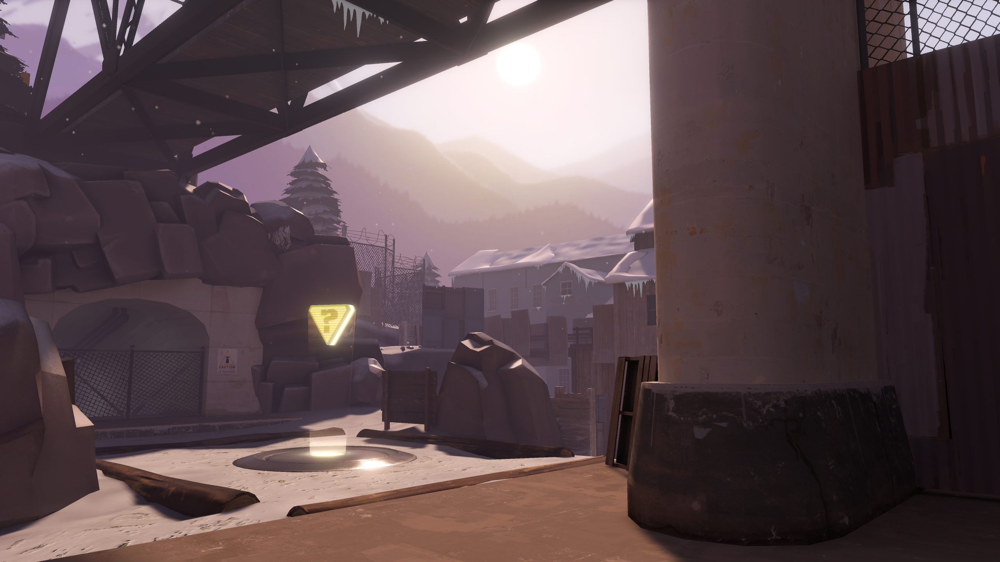
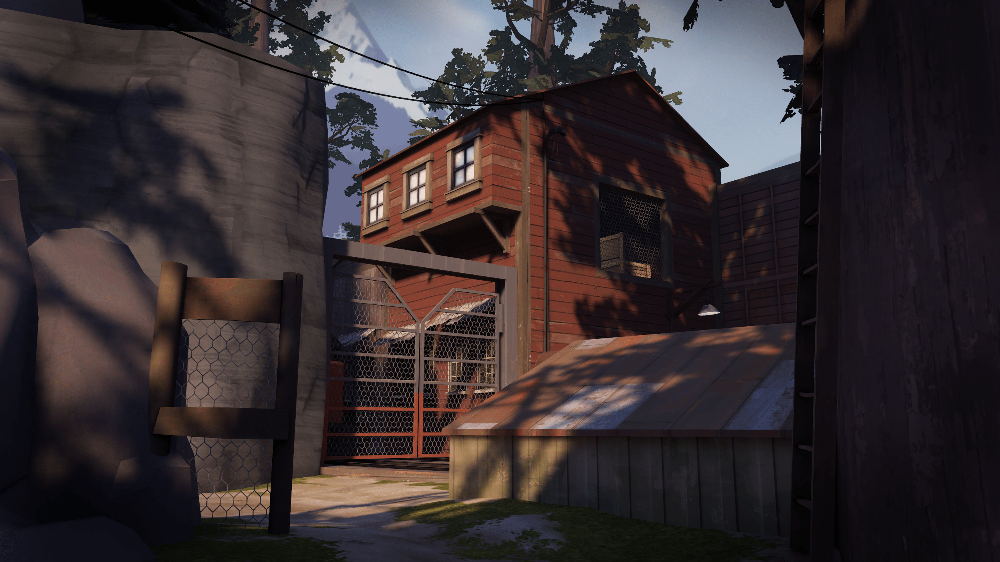

Opening The Source
In today's blog-post, we would like to update you about the state of the Team Fortress: Source 2 project, what has happened over the past few months, what we have planned for the future and what you should expect from the project.

Tinker and Timber
This time the team outlines some major developments, including overhauled class, weapon and gamemode code, UI improvements and new character models.

Battleships, Balancing and Blockouts
Dive in to learn more about how the Amper team is faithfully recreating Team Fortress 2 in Source 2. In this blog post, we cover a wide range of critical elements, including maps, UI, music and more!

The Finer Details
In this month's blog post we invited members of our team to discuss what they’ve achieved since we last dived into the development process for the Team Fortress: Source 2 project.

Answering Your Questions
A few weeks ago, we asked you to submit your questions about the project on our Twitter. In today's blog post, we are going to answer most of the important ones, as well as clearing out some confusion and expectation about us.

The First Steps
This is the first development blog post of the TF:S2 project.
Get to know what the team has been up to the last few weeks, from rebuilding the bases of TF2, to improving the assets, and also some in game sneak peeks of TF2 in Source 2! (s&box)